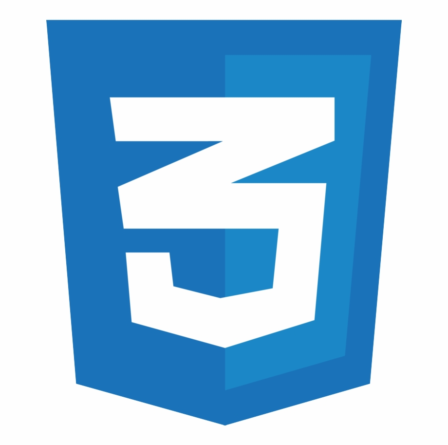
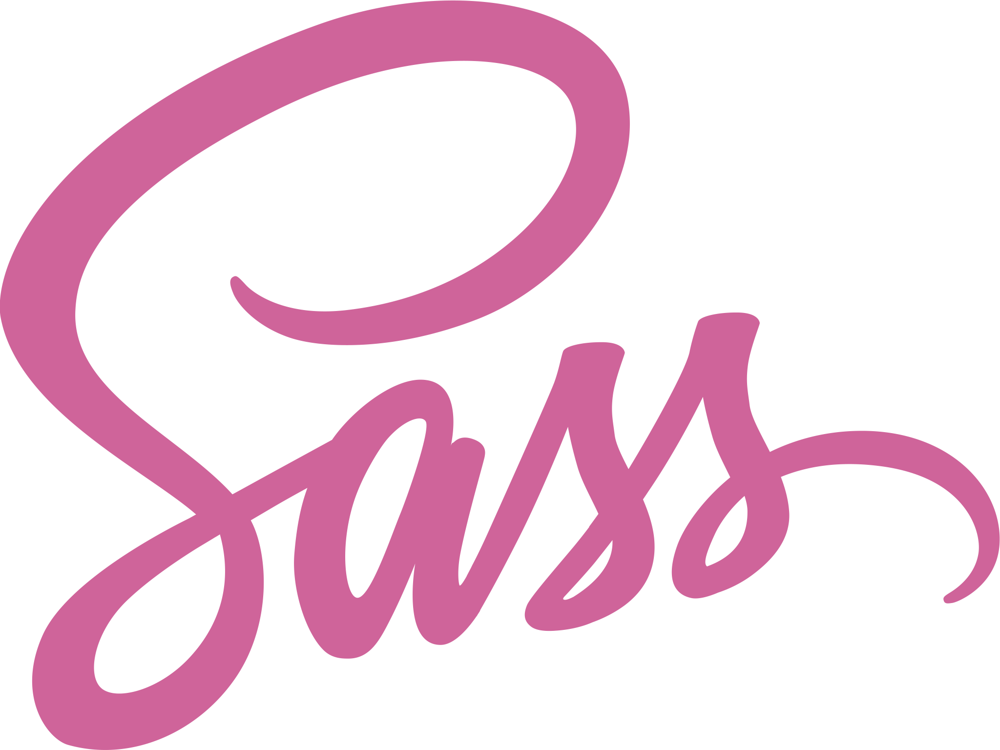
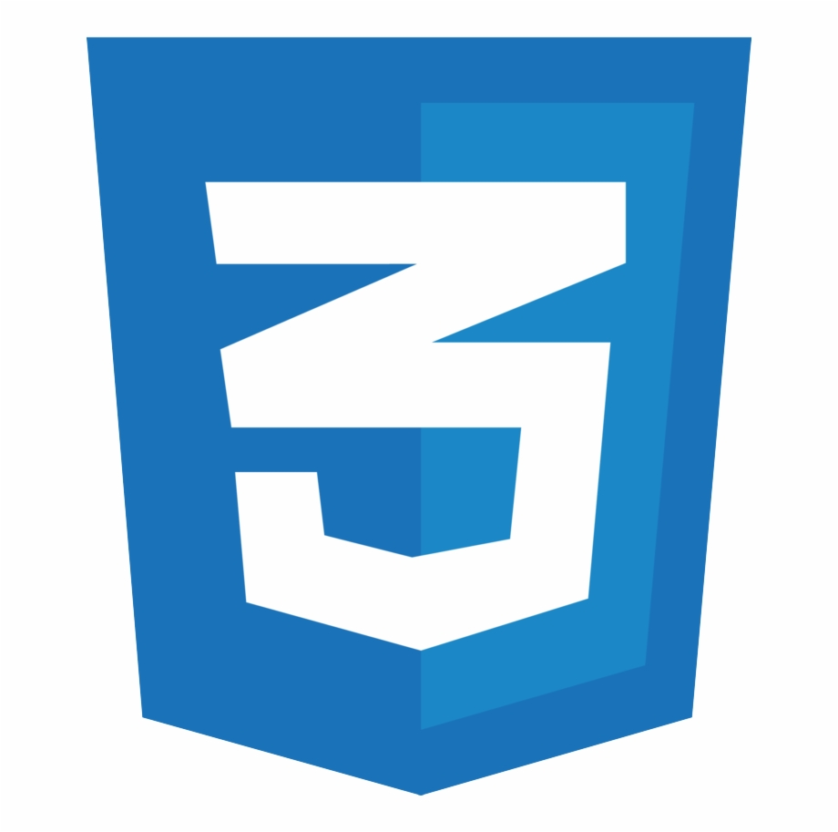
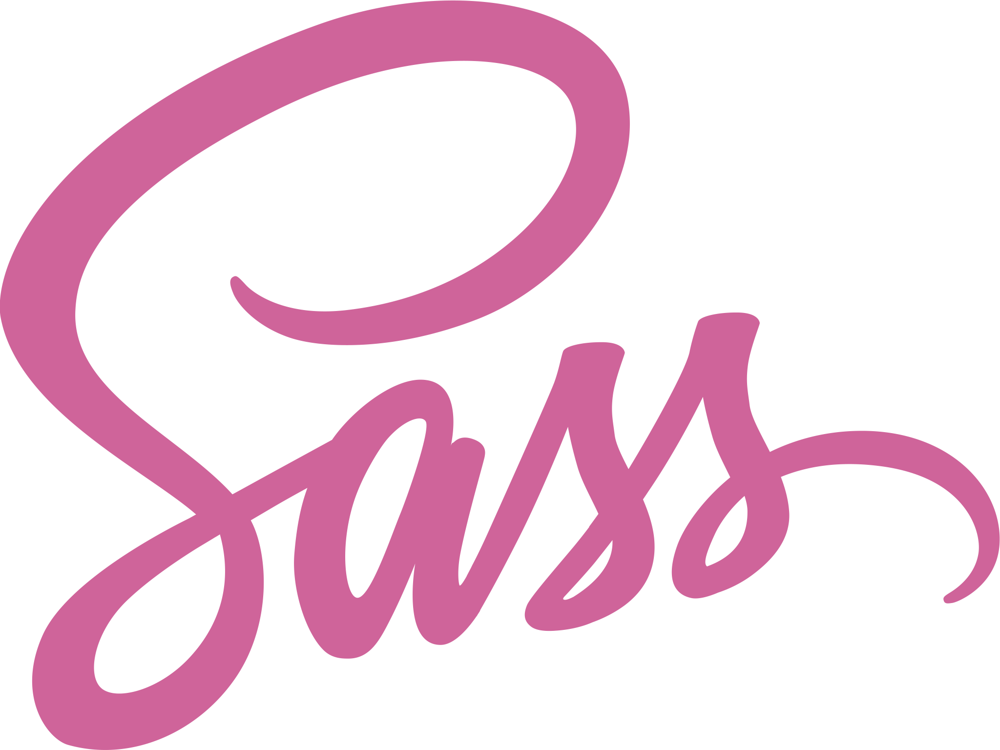

About me
Background
Born and raised in Newcastle! From a very young age at school I pick up a lot of interest in IT as a subject and instantly knew that's what I wanted to focus on learning on. Many years later after learning the basics of IT at school, I joined the Accenture Apprenticeship program to pursue a life in IT and to expand my skills. This was a great opportunity for me to learn on the Job while getting the chance to obtain more qualifications such as an NVQ & a degree at Sunderland University, where I achieved a 1st Class in BSc Digital Technology Solution’s & Software Engineering. Some other key highlights of my working careers is getting the chance to become scrum master certified and winning Accenture Newcastle Apprentice of the Year 2016.
Experience
- Accenture (8 Years)
- I joined Accenture through their Apprenticeship program where I gained a large amount of project methodology and client interaction experience, from working in both local and distributed agile & waterfall teams. Working at Accenture I have gained a vast amount of problem-solving experience, which includes analysing and deconstructing complex requirements to create and deliver solutions. Utilising relevant techniques and methodologies to support and execute the design, build, and maintenance of applications and assets. I've mainly been a frontend developer over these years working with languages such as HTML, CSS, Javascript, SCSS and Vue.js. However during my 8 years here I have experienced working different areas such as a functional tester, scrum master and an Atlassian admin.
- University (3 Years)
- As part of the Accenture Apprenticeship program I went to Sunderland University during my time at Accenture to study Digital Technology Solution’s & Software Engineering. This course allowed me to get experience and develop my software skills such as web development, cyber security, networking and software design. For example some of my main assignments had me working with HTML, CSS, Javascript, PHP, Java & Adobe XD to build digital solutions for the given assignment briefs. My final dissertation was an investigation into how web mobile impacts people with disabilities and how to build a fully accessible responsive website. My initial finds were when responsive websites were done incorrectly, this had a negative experience when people with accessibility needs used it. This lead to me building a responsive online comic/book store where people could trade their comics and books with other users. This was built in Vue.js/SCSS and met the Web Content Accessibility Guidelines (WCAG) 2.1 requirements. To help show my findings, I user tested it with people with accessibility needs where it received positive feedback. Through hard work I finished university with a first Class (1st).
- A-Levels (2 Years)
- This was the start of my path to a career in IT. It was here where I took IT as a subject at A-Levels which showed me how to build wireframes off requirements, develop websites in Dreamweaver, use the command line, build PC's and load software onto them. It also taught me the basics of how to use excel, write emails and documents.
Case Studies
- Upgraded multiple services & fixed their accessibility issues
- Helped develop service prototypes
- Lead frontend developer on a new HMRC catalog service
- Frontend developer one of the main Eat Out to Help Out services
Upgraded multiple services & fixed their accessibility issues
I was brought onto a HMRC team that had their complete service accessibility tested and failed to meet accessibility standards. This was a huge concern for the project leads as it was a legal requirement for the services to meet the WCAG 2.1 requirement. The service was made up of around 8 repositories that all used the old frontend libraries. The frontend code itself was written by backend developers with no experience in frontend development. They had used the old frontend library as their only guidance which meant the frontend code wasn’t up to standard and it hadn’t been coded with accessibility in mind.
I analysed the Accessibility Audit, identifying the issues that were part of the reason the service had failed accessibility testing. Making a case to the Design Lead and Project Manager, I suggested the service needed to be upgraded to the latest Government Digital Service (GDS) Design System components in order to be more accessible. I highlighted the following areas for improvement; the older frontend components either had bad contrasting colours, used incorrect HTML e.g using the wrong heading tags, tables with no captions or inputs without labels. Including small things such as components using tables when they could be detailed lists or summary lists.
Before I got started, I made a case to the design lead and project manager that the services needed to be upgraded to the latest Government Digital Service (GDS) Design System components in order to be more accessible. I suggested this as the older frontend components either had bad contrasting colours, used incorrect HTML e.g using the wrong heading tags, tables with no captions or inputs without labels. And even small things such as components using tables when they could have been detailed lists or summary lists. All these issues were part of the reason the service failed its accessibility test.
Initially, I received push back from the design team since the upgrade meant visual changes. I emphasised how the newer components had been designed with accessibility in mind and unlike the older components which made it harder for screen readers to communicate what was presented on the screen or could have made components harder to view for people with sight issues. I arranged sessions to teach them how the assisted technology works, drawing attention to how switching to the new frontend library would benefit any disabled users, in turn improving the user experience. Through this I gained their approval and going forward they would be more accessibility aware when designing.
I was tasked with upgrading all the repositories and a complete rebuild using the new frontend library components. While doing this I would need to assess any accessibility failures in the code that would need addressing before the services went for a retest. One of the challenges I faced was multiple developers working in these repositories which meant communication was key with the other developers about what was being worked on. To achieve good communications I shared my plans for repository upgrades in sprint planning sessions and made everyone aware what screens I would be working on. When there was priority for other developers to be working in the same repository where the upgrades took place, I kept in constant communication with them over Slack regarding when work was being pushed to the main branch. If I failed to do this then it could lead to many conflicts due to the amount of changes I was making, which could have led to bugs that would need fixing costing more development time.
I started off by breaking the repositories into phases to make it easier for code reviews, more feasible to communicate what sections were being worked on and to make it manageable for our tester to test the upgrades.
In each phase, I upgraded the project to use the new frontend libraries, re-wrote the code to use the new components, cleaned the frontend code and ensured each page met the WCAG 2.1 requirements. During this process I kept the communication flowing with the lead designer as there were slight differences in visuals between the old frontend library and the new. The purpose of this was to allow me to quickly fix any visual differences they were unhappy with. Otherwise these visual issues would have had to be fixed later down the line meaning they would have had to be retested, deployed and released. It was also important I worked with the Lead Designer as there were cases where the old components were creating a bad user experience and worked alongside them to improve them, using the newer GDS Design System components. Once each phase was complete, I arranged meetings with the lead designer, product manager and tester to demo the new upgraded screens with the purpose of gathering feedback. Once the screens were signed off, the phases were sent to the tester where I made sure I was available for any questions they had.
To ensure smooth delivery, I planned the next phases upgrading in advance. Ensuring I communicated this information using our dev channels and in sprint planning so we could plan the work with the least amount of conflict.
The services repositories are now being re-tested with the Accessibility Team. The smaller repositories were sent first and have successfully passed the accessibility tests which means we are hitting the legal requirement due to the work I have done. Alongside this the service has been deployed where it’s being used by 14,000 registered users and the new-ish look is receiving positive feedback.
Helped develop service prototypes
Since we were moving the services from the old frontend libraries to the newer frontend, I noticed all the UI prototypes were using the old frontend components and not the new ones. I raised this issue as in the upgraded frontend there are slight visual differences with the components compared to the old ones. For example, there was a page in the prototype which used an old component, a on/off toggle whereas that component didn’t exist in the new GDS component library. This could have caused issues when user testing, it wouldn’t have provided accurate feedback for our newer upgraded service. It could also lead to confusion when demoing the prototype to the developers on how the design team wanted pages to be presented. As the developers would be working with components that may not exist or look vastly different.
After raising this issue, I was instructed to replicate the old prototypes in a new repository with the latest GDS Design System components. This all had to be complete before the next round of user testing as the design team wanted to use the new screens to get more accurate feedback. I also had the additional task of up-skilling a HMRC apprentice in frontend e.g HTML, CSS, Javascript (JS) and accessibility.
With deadlines in mind, I delegated the work out between me and the apprentice. We started off pair programming so that I could teach them how to write correct HTML, CSS & JS that met coding standards. Once they picked up suitable knowledge, we split off to work on our own screens so that we were working efficiently to meet the deadline. On some of the screens that were assigned to me, there were a couple of complicated components to recreate such as search bars with filters or tables with pagination. To build these I had to combine a mixture of the new GDS Design System components while keeping it fully accessible. When I wasn’t working on my own screens I set up regular code reviews and demos to give constant feedback to the apprentice that helped them learn and grow in the frontend world. This allowed them to pick up more difficult tasks that also helped the workload on me. Since the prototypes could be a source for the backend developers to copy frontend code from, I wanted to make sure the prototype met accessibility WCAG 2.1 too. To do this I also set up meetings with the apprentice/Lead designer and taught them how to use tools like WAVE to test their code in the browser.
Through teamwork,we met the user testing deadlines and produced a high standard prototype that was demoed at the user testing sessions. This allowed the design team to get more detailed, authentic feedback that would allow them to design and develop a service to meet the users needs.
Lead frontend developer on a new HMRC catalog service
HMRC wanted a new strategy to make finding information about API’s more accessible and easier to use for external and internal use. The current method was complicated and difficult for developers to locate and explore the different API’s on offer. This led to an ask for a new service to be built that catalogued API’s to allow developers to freely search through them with the help of filters and to provide detailed information on how to use them. The goal was to hopefully improve people's user journeys and make it easier for them to find API’s. The service was to be designed and built from scratch.
As the lead frontend developer on this project, My role involved working alongside the Lead Designer to develop the prototype,providing component guidance e.g. suggesting to use a summary list instead of a table in places we needed to summarise information with pair values. I made changes based on user feedback so the API Catalogue had features users valued ensuring the prototypes were meeting the accessibility requirements.
I developed the frontend for the Catalogue providing support to the backend developers. My tasks involved copying patterns and code from the prototype and ensuring they worked with the backend code. Making sure all the content and the design looked pixel perfect to what was presented in the prototype. I code reviewed all the frontend work to guarantee we were hitting the accessibility legal requirement and that the code standards were being met to reduce the chances of bugs.
I co-built the prototype with the Lead Designer. Dividing the screens between us, working off story boards that had been built from the business requirements. To maintain the prototype's accessibility standards so that other developers could copy and use code from, I provided guidance to the lead designer in regular calls and review sessions. I found these sessions helpful for my own development as they would go away to learn more about accessibility and then show me their findings through their work. On top of this, I regularly tested mine and the Lead Designers screens using the WAVE tool to reduce the chances of accessibility issues.
It was important we got the prototype complete in a timely fashion as we needed to get it out in front of users testing sessions. To help achieve this we set out to make reusable components and CSS where we could. Meaning if there was a design change, we would only have to change it in 1 place, instead of multiple locations where human error could cause slight differences. The benefit this brought to the prototype was there was consistency in the design. The custom components in the new service were assigned to me so that they could be carefully built to ensure the accessibility needs were still being met. These were more difficult than copying code from the GDS component library and getting it to work on our screens. For example one of the custom components was a filter which had to be made up of multiple GDS components and Javascript had to be written for it to work. I had to make sure the JavaScript worked across multiple browsers and operating systems so that it didn’t just work for a select number of people.
Once the prototype was complete, I paired programmed with the backend developers to help develop some of the frontend section assigned to them, assisting hooking up the frontend and backend code ensuring the prototype was being transitioned over into the actual service so that the designs matched the end product.
The result of our efforts was we delivered and released the new service that held over 1000 API’s and it passed its scheduled accessibility review with flying colours! The service is now 1 year into public beta which is constantly evolving through user feedback. This would not have been possible if I didn’t manage to get it to meet the WCAG 2.1 legal requirements. The service has also received good feedback from internal and external teams, noting they found the service easier to find and locate API information.
Frontend developer one of the main Eat Out to Help Out services
At the start of the pandemic there was a scheme set up by the government to try and get people to eat out at restaurants in order to boost their revenue during the tough financial time. This was called the Eat Out to Help Out (EOtHO) Scheme. I joined one of the main teams as a frontend developer responsible for developing the search and results screens. At the point I joined, the designs had already been complete and development was about to begin.
My role was to develop the screens that had been designed by the design team and to work alongside the backend developers, tasked to hook up the backend and frontend. This was a fast paced project with weekly releases which meant we had to develop, test and deploy with tight deadlines while delivering high standard/accessible code.
Due to the fast paced nature of the project, there were constantly new requirements. I prioritised new features based on what was most useful for users such as a language switch for Welsh users. These decisions were made by looking at the popularity of the requests generated from user feedback and from there decisions on what we would focus on were made in calls with the project manager or in sprint planning sessions.
At the start of development I realised there weren't any mobile designs. I raised this as a high risk problem with the Project Manager and Lead Designer. EOtHO was a public facing website where users were most likely going to be using a mobile phone to view the list of restaurants when searching for participating establishments. The team were under pressure to meet timescales and didn’t have the capacity to produce a new set of mobile phone focused designs.. To deliver this product,I communicated with the designers in regular calls while developing the frontend to make it fully responsive for all devices and browsers. Following their guidance on how they wanted tables displayed on mobile and font sizes.
Utilising Government Digital Service (GDS) Design System components, I developed the search and the results pages which were 2 of the main screens of the service. Once the majority of the frontend screens had been built, I paired programmed with the backend developers to link up the frontend and backend to get the functionality working. This proved an efficient way of working as I was able to provide form ID’s and if there were any design changes from user feedback, I could easily inform them if form elements changed. This prevented the new changes breaking the existing functionality.
I volunteered to code review other frontend sections of the service. When my tasks were complete, I took the opportunity to learn more about accessibility, advancing my knowledge by working with the HMRC accessibility team. Listening to their guidance and methods of testing, I helped them to help spot and fix any issues we identified.
The launch of Eat Out to Help Out scheme was a success and used by millions of members of the British public where it received fantastic feedback. Each day it was used by over 100 thousand users and minimal bugs were identified which reflects how solid the frontend and backend code was developed.
Skills
 HTML

CSS

SASS
HTML

CSS

SASS
 Javascript
Javascript
 Adobe XD
Adobe XD
 Vegas Pro
Vegas Pro
- Atlassian
- A tool used by agile development teams to track bugs, stories, epics, and other tasks. I was once an Atlassian admin so have experience of how the set up works.
- HTML
- Frontend language that is used to structure a web page and its content.
- CSS
- Frontend language also known as Cascading Style Sheets (CSS) and is used to style webpages.
- SASS
- Sass is a preprocessor scripting language that is interpreted or compiled into Cascading Style Sheets. It enables you to use things like variables, nested rules, inline imports and more
- Javascript
- Frontend language used to make webpages dynamic and interactive. There are many Javascript frameworks, a popular one I like to use is Vue.js.
- Adobe XD
- Adobe XD is a user experience design tool to build out web sites and mobile apps.
- Vegas Pro
- Vegas Pro is a video editing software tool that is used to cut together, edit and render videos.
Contact details
Have a question? Feel free to send me an email.
Or you can find me on these social media pages: